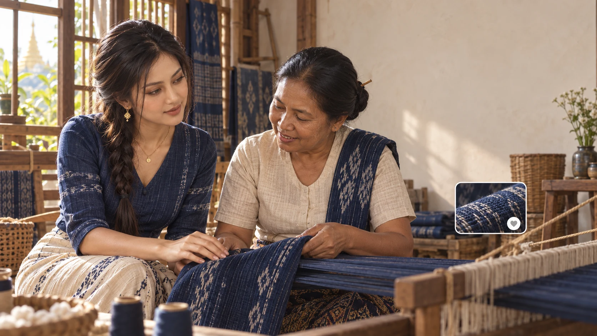
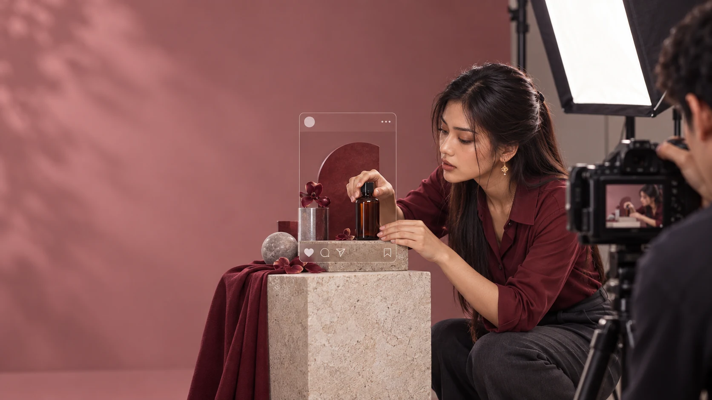

01 / CREATE
Content Studio
အမှတ်တံဆိပ်ကို ထင်ရှားစေဖို့။
For businesses that need a fresh library of content.
- Content planning
- Product & business photography
- Short-form video editing
- Myanmar & English captions

REAL STORIES · BIGGER TOMORROWS
သင့်လုပ်ငန်းကို လူပိုသိစေမယ်။
Content that tells your story.
Social media that keeps it moving.
IDEAS INTO EVERYDAY IMPACT
သင့်အမှတ်တံဆိပ်အတွက် ထိမိတဲ့ Content။
Planning, photography, short videos and everyday publishing.
See what we doHOTELS & HOSPITALITY
သင့်ဟိုတယ်ကို ရွေးချယ်ချင်လာစေမယ်။
From a first impression to the feeling of being there. Bring your rooms, service and experience into focus.
Plan a hotel shootRESTAURANTS & CAFÉS
မြင်တာနဲ့ လာစားချင်စေမယ်။
From the kitchen to the feed. Make your food, people and atmosphere part of the story.
Create a food storyLOCAL SHOPS & ONLINE SELLERS
သင့်ဆိုင်ကို ပိုလူသိစေမယ်။
Show what makes your products special, with clear visuals and social support that fits your day.
Support my shop
HANDMADE & HERITAGE
လက်ရာတိုင်းမှာ ပြောစရာရှိတယ်။
Bring the process, the people and the care behind every piece into the spotlight.
Tell my craft story
LOCAL BRANDS
သင့်အမှတ်တံဆိပ်ကို မှတ်မိနေစေမယ်။
A recognisable look, a consistent voice and content that carries your story across every channel.
Build my brandLIVE COMMERCE
Live မှာ ဖောက်သည်နဲ့ ပိုနီးစပ်စေမယ်။
Product demonstrations, live session planning and real-time audience support.
Explore live supportYOUR GROWTH TEAM
သင့်လုပ်ငန်းနဲ့ ကိုက်ညီတဲ့ Plan။
From a single shoot to ongoing page management. Choose the support your business needs.
Compare plansA LITTLE SUPPORT. OR THE WHOLE PICTURE.
သင့်အတွက် ဘယ် Plan လဲ။
လုပ်ငန်းလိုအပ်ချက်အလိုက် ဝန်ဆောင်မှုများကို ညှိနှိုင်းနိုင်ပါတယ်။
01 / CREATE
အမှတ်တံဆိပ်ကို ထင်ရှားစေဖို့။
For businesses that need a fresh library of content.
02 / MANAGE
နေ့စဉ် Social Media အတွက်။
For businesses that want a consistent social presence.
03 / CONNECT
Live အစမှ အဆုံးအထိ အတူရှိမယ်။
For businesses ready to connect with customers live.
Scope & pricing tailored to your business. Advertising spend quoted separately.
YOUR NEXT CHAPTER
သင့်လုပ်ငန်းအကြောင်း ပြောပြပါ။
Tell us about your business, your audience and what you want to do next. We’ll shape the next step together.
Facebook · Business Growth Myanmar
ဒီနာမည်ကို Facebook မှာ ရှာနိုင်ပါတယ်။